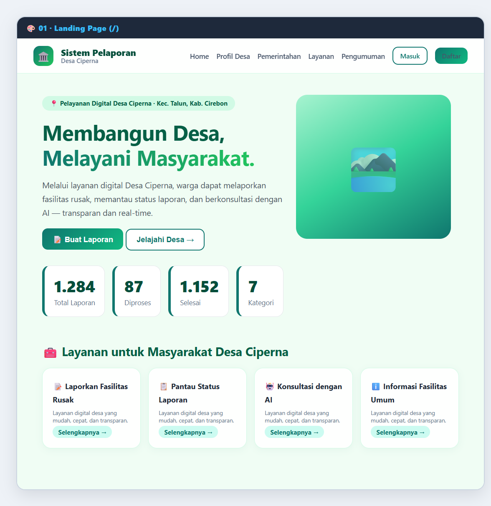
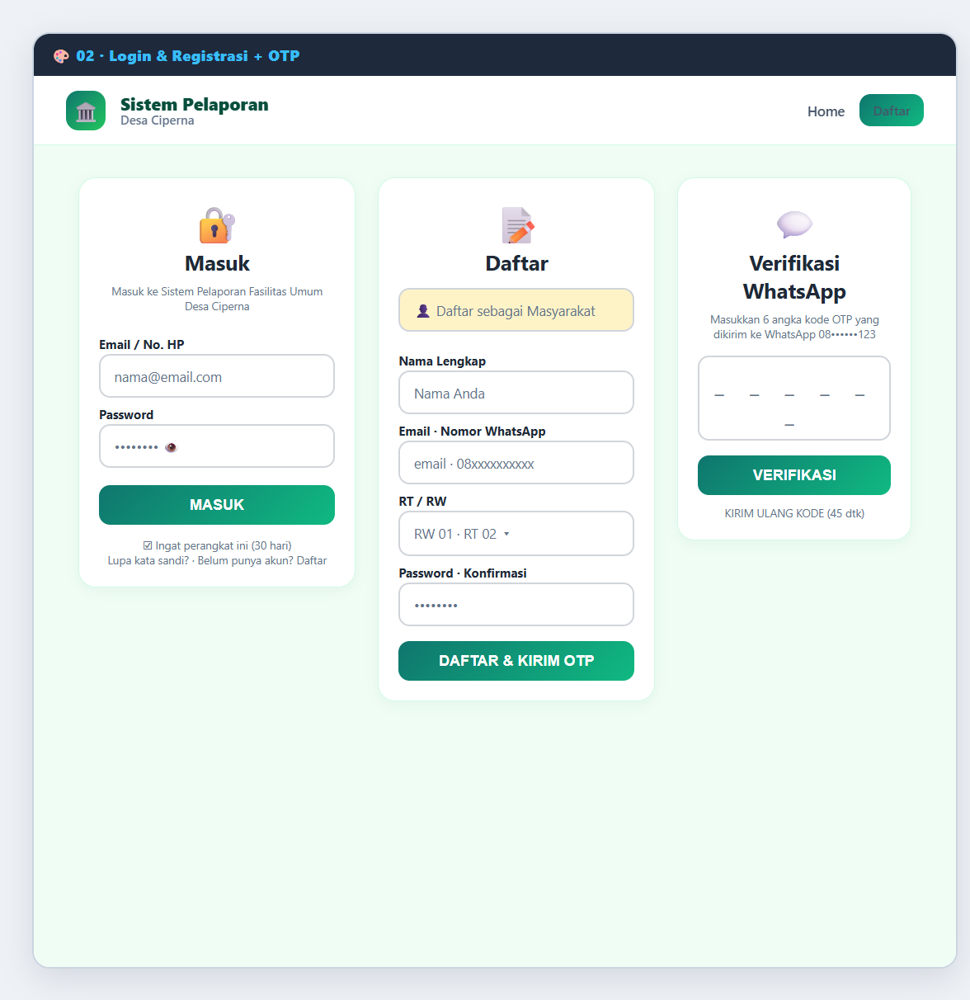
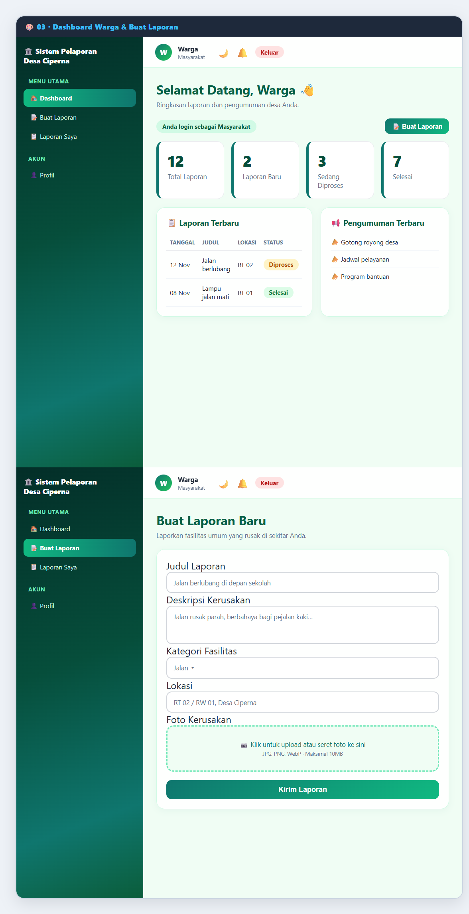
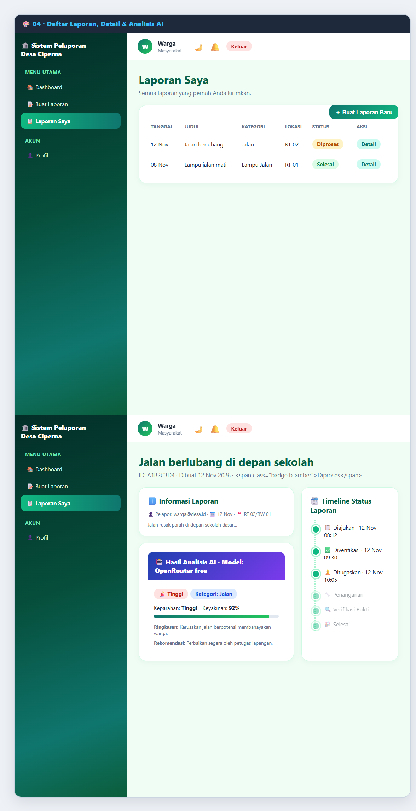
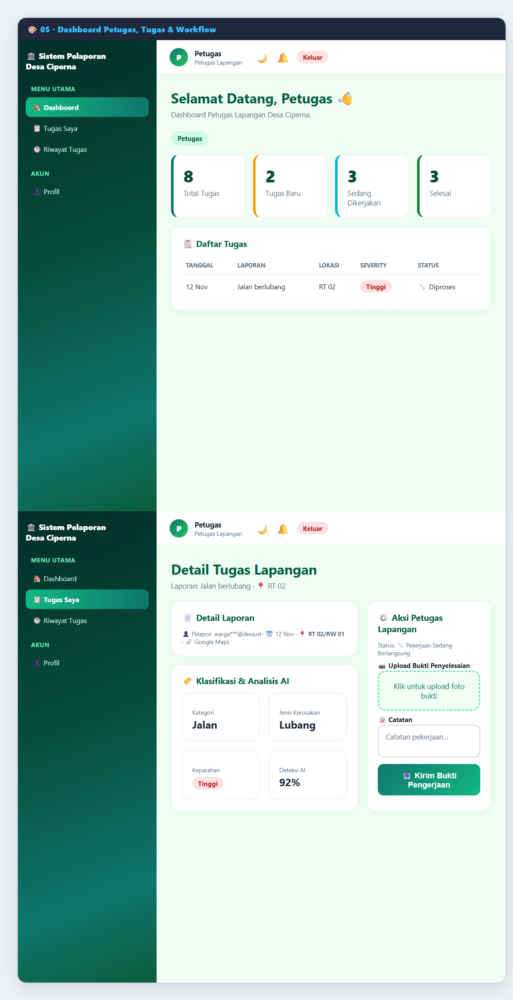
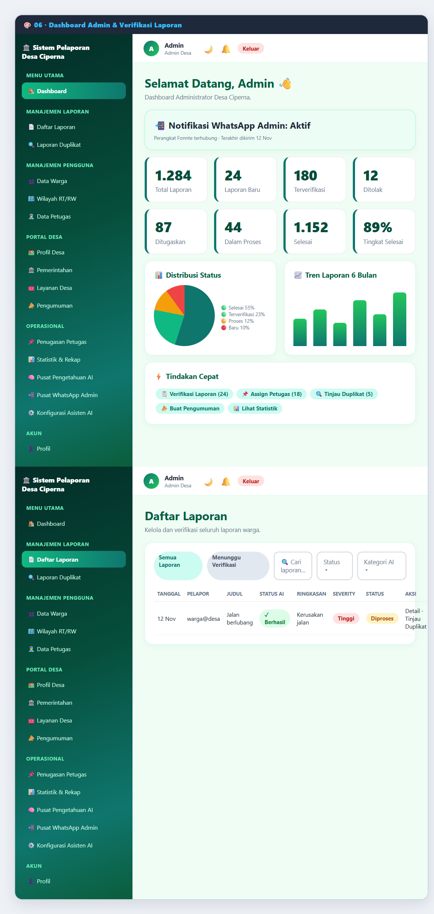
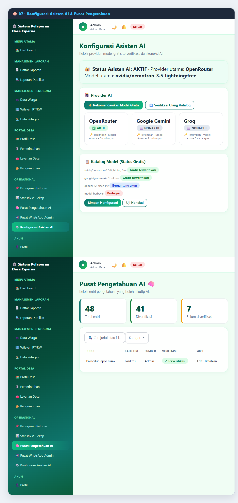
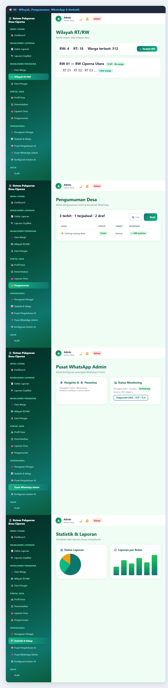
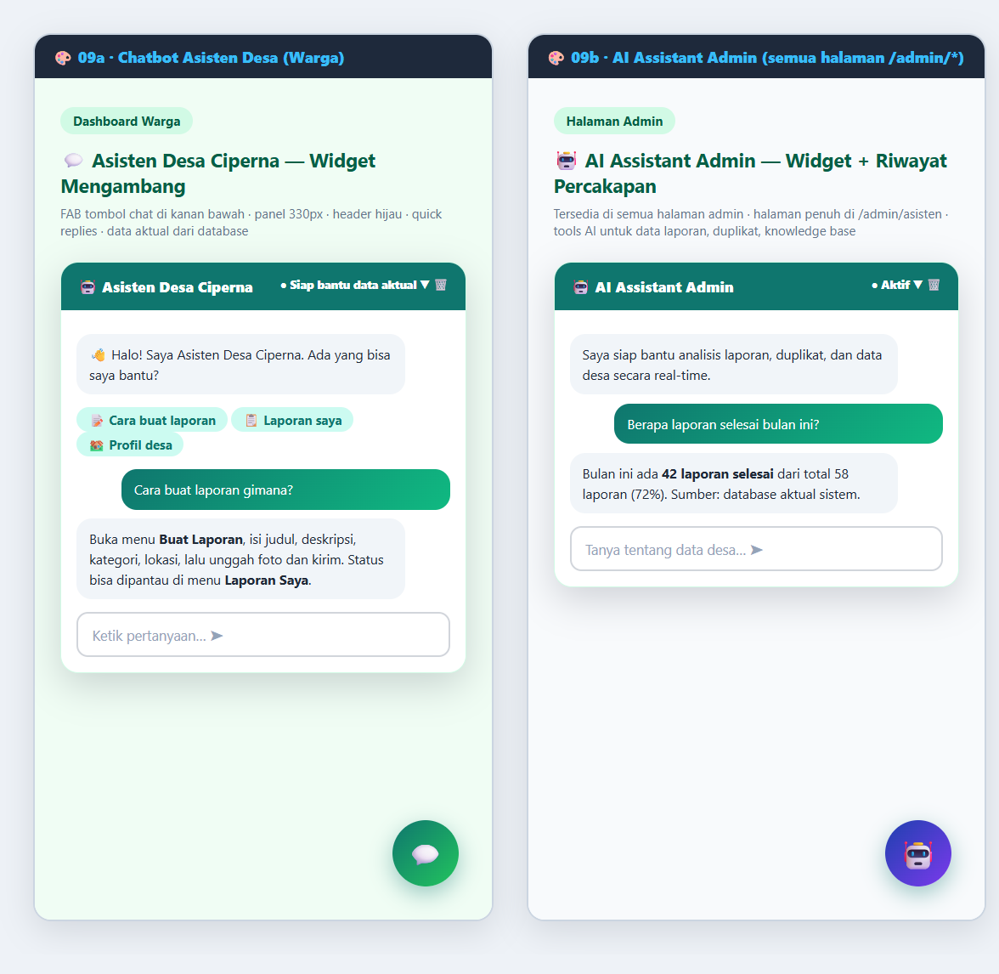
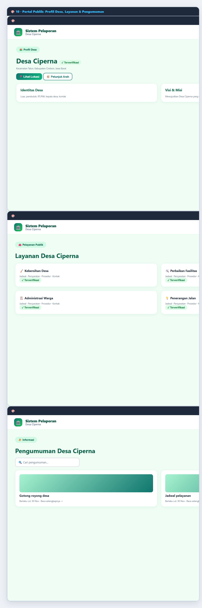

10 layar aplikasi · drag gambar ini ke Figma → setiap bagian menjadi 1 Frame · sambungkan dengan Prototype










Sistem Informasi Pelayanan & Pelaporan Warga Desa Ciperna · TIKB2503021 · Rekayasa Perangkat Lunak